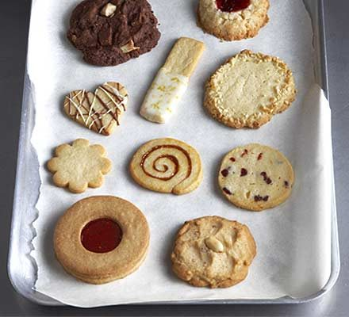

Biscuits

Description
This simple recipe for a basic biscuit dough can be adapted to suit your tastes – experiment with different
shapes and flavours, from lemon fingers to chocolate cookies
Ingredients
- 250g butter, softened
- 140g caster sugar
- 1 egg yolk
- 2 tsp vanilla extract
- 300g plain flour
Steps
- Mix the butter and sugar in a large bowl with a wooden spoon, then add the egg yolk and vanilla extract and
briefly beat to combine.
- Sift over the flour and stir until the mixture is well combined – you might need to get your hands in at the
end to give everything a really good mix and press the dough together.
- For basic vanilla biscuits: Pre-heat the oven to 180C/160C fan/gas 4. Chill the dough for 20 - 30minutes,
roll out and cut out shapes as above. Bake on a non-stick baking tray for 10-12 minutes until pale golden.
Carefully transfer to a wire rack to cool and crisp up.